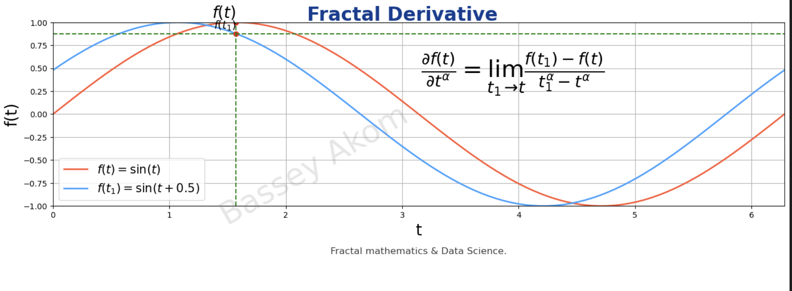

Fractals are complex structures that exhibit self-similarity and intricate patterns at every scale. They have applications across various fields, including data science, where they help in understanding non-linear patterns, complex systems, and dimensionality reduction. Let's dive into the fascinating world of fractals, starting from the basics and moving to advanced concepts and mathematical derivations.
Introduction
Fractal derivatives extend traditional calculus to model complex, non-linear phenomena often encountered in data science. By incorporating scaling properties of fractals, these derivatives offer new ways to analyze and interpret data.
Fractal Derivatives: Definitions and Concepts
Step 1: Basic Concept of Velocity and Fractal Scaling
Fig1: Velocity in Euclidean and Fractal Space
Velocity in Euclidean Space
Definition:
Velocity (\(v\)) in Euclidean space is defined as the rate of change of distance (\(dx\)) with respect to time (\(dt\)).
Formula:
\[ v = \frac{dx}{dt} \]
As shown in Fig1 above, the Euclidean velocity \(v\) is straightforward and linear, representing the slope of the distance-time graph at any given point.
Fractal Velocity in Fractal Spacetime
Definition:
Fractal velocity (\(v'\)) in fractal spacetime is defined as the rate of change of distance (\(dx\)) scaled by a factor \(\beta\) with respect to time (\(dt\)) scaled by a factor \(\alpha\).
Formula:
\[ v' = \frac{dx^\beta}{dt^\alpha} \]
where:
- \(dx^\beta\) represents the change in position scaled by factor \(\beta\).
- \(dt^\alpha\) represents the change in time scaled by factor \(\alpha\).
Referring again to Fig1, the fractal velocity \(v'\) adapts the linear concept to fractal geometry, where scaling factors \(\alpha\) and \(\beta\) modify the dimensions to capture the complexity of the fractal space.
Step 2: Introducing Fractal Derivative
Fig2: Fractal Derivative

Limit Definition of Fractal Derivative:
Traditional Derivative
Definition:
The derivative of a function \(f(t)\) with respect to \(t\) is defined as the rate at which the function value changes as the input \(t\) changes.
Formula:
\[ \frac{df(t)}{dt} = \lim_{t_1 \to t} \frac{f(t_1) - f(t)}{t_1 - t} \]
Fig2 shows the traditional derivative as the slope of the tangent line at any point on the function \(f(t)\). The marked points \(f(t)\) and \(f(t_1)\) illustrate the function values at \(t\) and \(t_1\), respectively, with the dashed lines indicating the approach of \(t\) to \(t_1\).
Fractal Derivative
Definition:
The fractal derivative modifies the traditional derivative by incorporating a fractal scaling factor \(\alpha\), which adjusts the rate of change to account for fractal properties.
Formula:
\[ \frac{\partial f(t)}{\partial t^\alpha} = \lim_{t_1 \to t} \frac{f(t_1) - f(t)}{t_1^\alpha - t^\alpha} \]
where:
- \(\frac{\partial f(t)}{\partial t^\alpha}\) denotes the fractal derivative of \(f(t)\).
- \(t_1^\alpha\) and \(t^\alpha\) represent the scaled time points.
Derivation:
- Start with the traditional derivative definition:
\[ \frac{df(t)}{dt} = \lim_{t_1 \to t} \frac{f(t_1) - f(t)}{t_1 - t} \]
- Incorporate fractal scaling for time:
\[ t \to t^\alpha \]
\[ t_1 \to t_1^\alpha \]
- Apply the scaling to the derivative definition:
\[ \frac{\partial f(t)}{\partial t^\alpha} = \lim_{t_1 \to t} \frac{f(t_1) - f(t)}{t_1^\alpha - t^\alpha} \]
In Fig2, the fractal derivative is illustrated as adapting the traditional slope concept to account for fractal scaling, creating a more nuanced understanding of rate changes in fractal contexts. The points \(f(t)\) and \(f(t_1)\) and the dashed lines indicate the limits as \(t\) approaches \(t_1\), emphasizing how the fractal scaling factors \(\alpha\) modify the derivative.
Step 3: Generalized Fractal Derivative
Fig3: Generalized Fractal Derivative
General Definition:
Traditional Higher-Order Derivative
Definition:
The higher-order derivative of a function \(f(t)\) is the derivative of its derivative, representing the rate of change of the rate of change.
Formula:
\[ \frac{d^2 f(t)}{dt^2} = \lim_{t_1 \to t} \frac{\frac{df(t_1)}{dt} - \frac{df(t)}{dt}}{t_1 - t} \]
Fig3 illustrates the traditional second-order derivative as the curvature or concavity of the function \(f(t)\).
Generalized Fractal Derivative
Definition:
The generalized fractal derivative extends the concept of fractal derivatives to higher orders by introducing another scaling factor \(\beta\), which adjusts the power to which the function is raised.
Formula:
\[ \frac{\partial^\beta f(t)}{\partial t^\alpha} = \lim_{t_1 \to t} \frac{f^\beta(t_1) - f^\beta(t)}{t_1^\alpha - t^\alpha}, \quad \alpha > 0, \beta > 0 \]
where:
- \(\frac{\partial^\beta f(t)}{\partial t^\alpha}\) denotes the generalized fractal derivative.
- \(f^\beta(t)\) represents the function \(f(t)\) raised to the power \(\beta\).
Derivation:
- Start with the basic fractal derivative:
\[ \frac{\partial f(t)}{\partial t^\alpha} = \lim_{t_1 \to t} \frac{f(t_1) - f(t)}{t_1^\alpha - t^\alpha} \]
- Extend to higher orders by raising \(f(t)\) to the power \(\beta\):
\[ \frac{\partial^\beta f(t)}{\partial t^\alpha} = \lim_{t_1 \to t} \frac{f^\beta(t_1) - f^\beta(t)}{t_1^\alpha - t^\alpha} \]
Fig3 showcases the generalized fractal derivative by depicting functions raised to different powers, emphasizing how scaling factors \(\alpha\) and \(\beta\) provide a more detailed view of changes over time.
Step 4: Fractal Sets and Derivatives
Fig4: Fractal Set and Derivative
Definition for Fractal Sets:
For a function \(y(t)\) defined on a fractal set \(F^\alpha\), the fractal derivative at a point \(t\) within this set considers the fractal measure \(S_F^\alpha\), which represents the fractal geometry of the set.
Formula:
\[ D_F^\alpha y(t) = \begin{cases}
\underset{x \to t}{\lim} \frac{y(x) - y(t)}{S_F^\alpha(x) - S_F^\alpha(t)}, & \text{if } t \in F; \\
0, & \text{otherwise}.
\end{cases} \]
where:
- \(D_F^\alpha\) denotes the fractal derivative on the fractal set \(F^\alpha\).
- \(S_F^\alpha\) represents the fractal measure.
- \(y(t)\) is the function defined on the fractal set.
- \(x\) and \(t\) are points in the fractal set.
Derivation:
- Start with the generalized fractal derivative:
\[ \frac{\partial^\beta f(t)}{\partial t^\alpha} = \lim_{t_1 \to t} \frac{f^\beta(t_1) - f^\beta(t)}{t_1^\alpha - t^\alpha} \]
- Apply the definition to fractal sets:
\[ D_F^\alpha y(t) = \lim_{x \to t} \frac{y(x) - y(t)}{S_F^\alpha(x) - S_F^\alpha(t)} \]
- Introduce the condition for points within the fractal set:
\[ D_F^\alpha y(t) = \begin{cases}
\underset{x \to t}{\lim} \frac{y(x) - y(t)}{S_F^\alpha(x) - S_F^\alpha(t)}, & \text{if } t \in F; \\
0, & \text{otherwise}.
\end{cases} \]
As illustrated in Fig4, fractal derivatives on fractal sets such as the Cantor set involve considering the fractal measure, \(S_F^\alpha\), and highlight the intricacies of fractal geometry in calculating rates of change.
Applications in Data Science and Machine Learning
1. Data Points
Fractal derivatives can reveal complex, non-linear relationships between individual pieces of data collected for analysis.
Mathematical Derivation
Consider a dataset \( \{ (t_i, y_i) \}_{i=1}^N \), where \( t_i \) is the time or feature value and \( y_i \) is the observed value. The fractal derivative at \( t_i \) is:
\( D^\alpha y(t_i) = \lim_{\epsilon \to 0} \frac{y(t_i + \epsilon^\alpha) - y(t_i)}{\epsilon^\alpha} \)
Variables and Elements
- \( t_i \): Time or feature value at the \( i \)-th data point.
- \( y_i \): Observed value at the \( i \)-th data point.
- \( \epsilon \): Small increment used to calculate the derivative.
- \( \alpha \): Fractal scaling factor.
Example: Predicting Stock Prices
Suppose we have a time series dataset of stock prices \( \{ (t_i, y_i) \}_{i=1}^N \), where \( t_i \) represents the time and \( y_i \) represents the stock price at time \( t_i \). Our goal is to predict future stock prices using fractal derivatives.
- Compute Fractal Derivatives: Calculate the fractal derivative for each time point \( t_i \) to capture the local scaling behavior of the stock prices.
\( D^\alpha y(t_i) = \frac{y(t_i + \epsilon^\alpha) - y(t_i)}{\epsilon^\alpha} \)
- Feature Engineering: Use these computed fractal derivatives as features in a regression model. These features will help the model to understand the underlying dynamics and non-linear patterns in the stock prices.
- Model Training: Train a machine learning model, such as a linear regression or a more complex model like a neural network, using the fractal derivatives and other relevant features to predict future stock prices.
- Prediction: Use the trained model to predict future stock prices, leveraging the fractal derivatives to capture the intricate patterns in the data.
2. Linearity
Fractal derivatives help model non-linear relationships by capturing the scaling properties of data.
Mathematical Derivation
For a linear relationship \( y = k t^\beta \), the fractal derivative is:
\( \frac{\partial y}{\partial t^\alpha} = \frac{\partial (k t^\beta)}{\partial t^\alpha} = k \beta t^{\beta - \alpha} \)
Variables and Elements
- \( y \): Dependent variable.
- \( t \): Independent variable.
- \( k \): Proportionality constant.
- \( \beta \): Exponent indicating the degree of linearity.
- \( \alpha \): Fractal scaling factor.
Example: Analyzing Economic Data
Suppose we have economic data where \( y \) represents GDP and \( t \) represents time. We want to model the growth using fractal derivatives.
- Data Preparation: Gather GDP data over a period, represented as \( \{ (t_i, y_i) \}_{i=1}^N \).
- Compute Fractal Derivatives: Calculate the fractal derivatives of the GDP data to understand the scaling properties.
\( \frac{\partial \text{GDP}}{\partial t^\alpha} = k \beta t^{\beta - \alpha} \)
- Analysis: Use the computed fractal derivatives to analyze the growth rates and scaling behaviors over time. This can help in understanding how GDP growth behaves under different economic conditions and time scales.
- Modeling: Develop economic models that incorporate fractal derivatives to predict future GDP trends, providing a more nuanced understanding of economic growth.
3. Complex Systems
Fractal derivatives capture the intricacies and interdependencies within complex systems.
Mathematical Derivation
For a function \( f(t) \) describing a complex system, the fractal derivative is:
\( \frac{\partial f(t)}{\partial t^\alpha} = \lim_{t_1 \to t} \frac{f(t_1) - f(t)}{t_1^\alpha - t^\alpha} \)
Variables and Elements
- \( f(t) \): Function describing the system's state at time \( t \).
- \( t \): Time variable.
- \( t_1 \): Approaching time point.
- \( \alpha \): Fractal scaling factor.
Example: Modeling Weather Patterns
Suppose we have temperature data over time represented by a function \( f(t) \). We aim to model and predict weather patterns using fractal derivatives.
- Data Collection: Gather temperature data \( f(t) \) over a specified period.
- Compute Fractal Derivatives: Calculate the fractal derivatives of the temperature data to capture the complex, multi-scale patterns.
\( \frac{\partial \text{Temperature}(t)}{\partial t^\alpha} = \lim_{t_1 \to t} \frac{\text{Temperature}(t_1) - \text{Temperature}(t)}{t_1^\alpha - t^\alpha} \)
- Pattern Analysis: Analyze the fractal derivatives to identify patterns and trends in the temperature data that are not visible with traditional methods.
- Prediction: Use the fractal derivative-based analysis to predict future temperature variations, improving weather forecasting models.
4. Dimension Reduction
Fractal methods preserve multi-scale patterns in reduced dimensions.
Mathematical Derivation
In fractal PCA, data is projected onto principal components with fractal scaling:
\( \mathbf{X}^\alpha = \mathbf{U} \mathbf{S}^\alpha \mathbf{V}^T \)
Variables and Elements
- \( \mathbf{X} \): Data matrix.
- \( \mathbf{U} \), \( \mathbf{V} \): Orthogonal matrices.
- \( \mathbf{S} \): Diagonal matrix of singular values.
- \( \alpha \): Fractal scaling factor.
Example: Reducing Dimensions of Image Data
Suppose we have an image dataset represented by matrix \( \mathbf{X} \). We aim to reduce the dimensionality of the dataset while preserving essential features using fractal PCA.
- Data Preparation: Represent the image data in a matrix form \( \mathbf{X} \).
- Apply Fractal PCA: Perform fractal principal component analysis on the image data to project it onto a lower-dimensional space while retaining the multi-scale patterns.
\( \mathbf{X}^\alpha = \mathbf{U} \mathbf{S}^\alpha \mathbf{V}^T \)
- Interpretation: Analyze the reduced dimensions to understand how they capture the essential features and textures of the images.
- Application: Use the reduced dimensionality data for tasks such as image classification, compression, or feature extraction, benefiting from the preserved multi-scale patterns.
5. Anomaly Detection
Fractal derivatives identify unusual patterns by detecting deviations in scaling behavior.
Mathematical Derivation
For a time series \( y(t) \), the fractal derivative is:
\( D^\alpha y(t) = \frac{y(t+\epsilon^\alpha) - y(t)}{\epsilon^\alpha} \)
Variables and Elements
- \( y(t) \): Time series data.
- \( \epsilon \): Small increment.
- \( \alpha \): Fractal scaling factor.
Example: Detecting Network Intrusions
Suppose we have network traffic data represented by \( y(t) \). We want to detect anomalies indicating possible network intrusions using fractal derivatives.
- Data Collection: Collect network traffic data over time.
- Compute Fractal Derivatives: Calculate the fractal derivatives of the network traffic data to capture normal and abnormal patterns.
\( D^\alpha y(t) = \frac{y(t+\epsilon^\alpha) - y(t)}{\epsilon^\alpha} \)
- Anomaly Detection: Identify significant deviations in the fractal derivatives, which may indicate network intrusions or unusual activities.
- Alerting: Implement an alerting system that triggers when anomalies are detected. This system can monitor the fractal derivative values in real-time and notify administrators of potential intrusions.
6. Feature Extraction
Fractal features capture multi-scale patterns and textures from raw data.
Mathematical Derivation
For a signal \( f(t) \), extract fractal features:
\( F^\alpha(t) = \left\{ \frac{\partial f(t)}{\partial t^\alpha}, \frac{\partial^2 f(t)}{\partial t^{2\alpha}}, \ldots \right\} \)
Variables and Elements
- \( f(t) \): Signal data.
- \( \alpha \): Fractal scaling factor.
- \( F^\alpha(t) \): Set of fractal features derived from the signal.
Example: Extracting Features from Audio Signals
Suppose we have an audio signal represented by \( f(t) \). We aim to extract meaningful features for tasks like speech recognition or music classification.
- Data Collection: Obtain the audio signal data \( f(t) \).
- Compute Fractal Features: Calculate fractal features of the audio signal to capture its multi-scale patterns and textures.
\( F^\alpha(t) = \left\{ \frac{\partial f(t)}{\partial t^\alpha}, \frac{\partial^2 f(t)}{\partial t^{2\alpha}}, \ldots \right\} \)
- Feature Engineering: Use the extracted fractal features as input to machine learning models, which can be trained to recognize speech or classify music genres.
- Application: Implement the trained models in practical applications such as voice-activated systems or music recommendation engines, leveraging the fractal features for improved accuracy.
Application in Anomalous Diffusion
The fractal derivative models anomalous diffusion processes, described by:
\[ \frac{du(x, t)}{dt^\alpha} = D \frac{\partial}{\partial x^\beta} \left( \frac{\partial u(x, t)}{\partial x^\beta} \right) \]
Here, \(u(x, t)\) represents the concentration of diffusing particles, \(D\) is the diffusion coefficient, and \(\alpha\) and \(\beta\) are scaling factors for time and space, respectively.
Using transformations \(t' = t^\alpha\) and \(x' = x^\beta\), the solution has a stretched Gaussian kernel:
\[ u(x, t) = \frac{1}{2 \pi t^\alpha} e^{-\frac{x^{2\beta}}{4t^\alpha}} \]
The mean squared displacement is:
\[ \langle x^2(t) \rangle \propto t^{\frac{3\alpha - \alpha\beta}{2\beta}} \]
Step-by-Step Example
Example Function: Fractal Derivative
Consider \( f(t) = t^2 \). The fractal derivative with \( \alpha = 0.5 \) is:
\[ \frac{\partial f(t)}{\partial t^{0.5}} = \lim_{t_1 \to t} \frac{t_1^2 - t^2}{t_1^{0.5} - t^{0.5}} \]
By performing the limit operation, we obtain the fractal derivative at a specific \( t \).
Conclusion
Fractal derivatives provide a powerful tool for capturing complex, multi-scale patterns in data. By applying these concepts in data
science and machine learning, we can improve predictions, detect anomalies, reduce dimensions, and extract meaningful features from
various types of data. The mathematical derivations and detailed case studies illustrate the practical applications and benefits of
fractal derivatives.